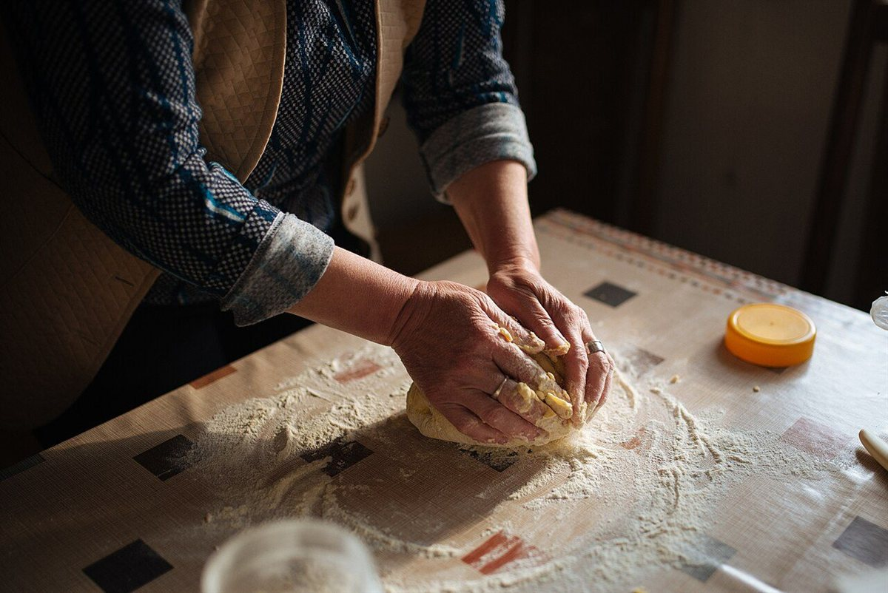
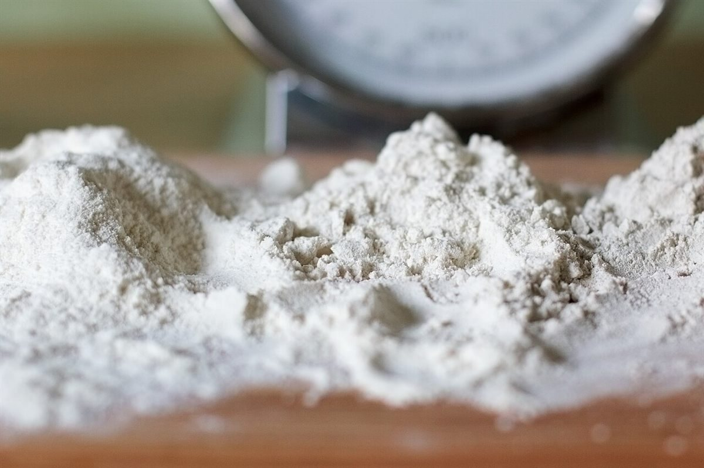

お店について
01
お店の基本情報
- 店名
- ベーカリースリール
- 業種
- パン屋
- 所在地
- 長野県伊那市西町5215-1
- instagram.com/bakery_thrill

02
営業について
- 営業時間
- 準備中(お問い合わせください)
- 定休日
- 準備中(お問い合わせください)
- 価格
- 準備中(お問い合わせください)
- メニュー
- 準備中(お問い合わせください)
詳しくはお電話でご確認ください。
03
イメージ
イメージ
コンセプト案
制作側の案
ここからは制作側の案です。お店の理念や店名の意味を示すものではありません。

「章をめくるように、パンを知る」
わかっていることが少ないので、少ない情報をそのまま、章に分けて並べました。
まだ載せられない情報は「準備中」と正直に書いています。情報が増えたときは、章を足していける作りです。
色は、山あいの空気を思わせる澄んだ青とグラファイトにしました。写真のパンの焼き色だけが、暖かい色として目に入るようにしています。
04
スタッフ
準備中(お問い合わせください)